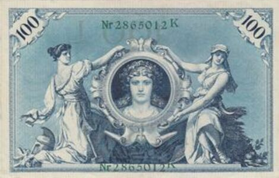

DE · 1908100 Mark — duas alegorias · cédula.
100 Mark — duas alegorias
Descrição curta
Alemanha · 1908 · cédula · regime normativo.
Descrição longa
Ficha do corpus iconocrático para 100 Mark — duas alegorias: alegoria feminina como tecnologia visual do Estado, classificada no regime normativo.
Fonte & proveniência
- Crédito
- Imagem do corpus ICONOCRACIA: 100 Mark — duas alegorias.
- Direitos
- Uso acadêmico e curatorial; verificar direitos junto à instituição detentora antes de reutilização comercial.
- Licença
- Todos os direitos reservados salvo indicação específica da fonte.
Dados canônicos
Esta ficha é gerada a partir de data/corpus.json. Última geração: 2026-06-24.